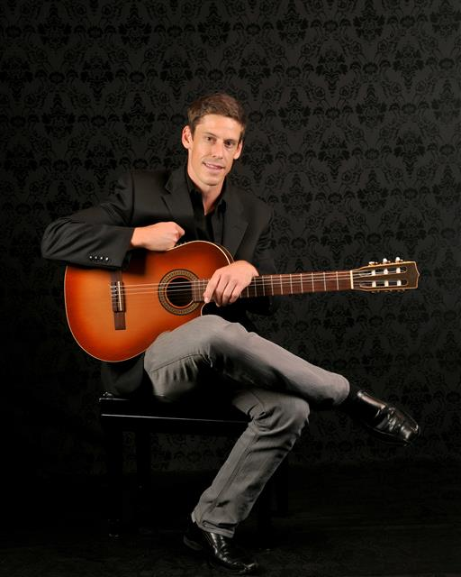
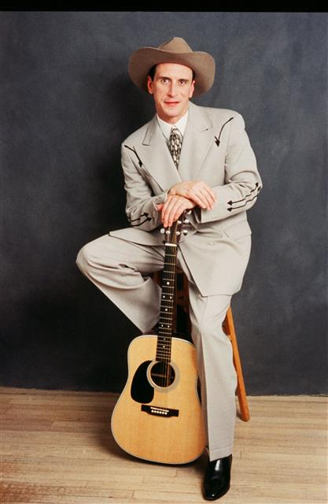

Andy Hackbarth
Saturday, October 7, 2017 7:30 PM
Award-winning
classical/Spanish/fingerstyle guitar virtuoso Andy Hackbarth pays tribute to
the “Father of the Classical Guitar,” Andres Segovia, through instrumental
selections and short stories about Segovia's
life and music. This eclectic musical journey transports listeners from the
music of Bach and the cathedrals of Germany,
to the hills of Spain and
the work of Albeniz and Tarrega; from classical Europe, to the southern tip of South America. "A Tribute to Segovia"
also looks to modern music and how Segovia's
work has influenced the contemporary guitar world.
www.andyhackbarth.com

Hank & My Honky Tonk Heroes
Saturday, November 11, 2017 7:30 PM
This nostalgic look at Hank Williams and his influence on
country music is amazing! Don’t miss Jason’s Obie awardwinning performance as
he brings Hank’s music back to life in this insightful, energetic show.
Jason also pays tribute to those who influenced Hank and
those Hank influenced. Some of these artists include: Jimmie Rodgers, Roy
Acuff, Ernest Tubb, The Carter Family, George Jones, Webb Pierce and more. This
show is a MUST-SEE for all country music fans!
www.jasonpetty.com

Duo Baldo
Saturday, March 17,
2018 7:30 PM
The musical comedy team, Duo Baldo, is comprised
of renowned violinist Brad Repp and pianist/actor Aldo Gentileschi. Their
critically acclaimed performances combine virtuosic performances, theatrical
humor, and pop culture.
Violinist Brad Repp has appeared as violin
soloist with José Carreras.
He performs on a 1736 Testore violin. Aldo
Gentileschi performs on whatever piano he can find.
www.duobaldo.com